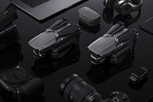
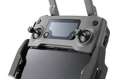
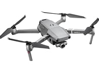
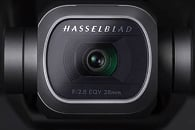
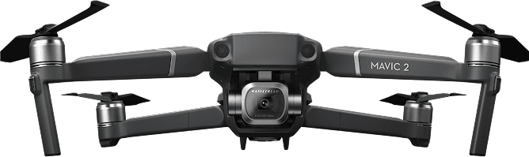

Что такое Mavic 2 Pro?
Дрон Mavic 2 Pro - это инженерное чудо, идеальное для аэросъемки. Дрон обладает всеми лучшими технологиями DJI, он преобразит мир аэросъемки.
Mavic 2 Pro оснащен совершенно новой камерой Hasselblad L1D-20c. Камера L1D-20c работает по уникальной технологии Hasselblad Natural Colour Solution (HNCS)5, позволяющей пользователям делать великолепные снимки с воздуха с разрешением в 20 мегапикселей и потрясающими цветами.
Преимущества
1

Интеллектуальные режимы
Mavic 2 унаследовал 6 стандартных режимов интеллектуальной съемки QuickShot:Roket/Dronie/Circle/Helix/Boome
rang/Asteroid.
2

Active Track 2.0
Усовершенствованный режим второго поколения распознаёт и отслеживает объекты ещё точнее, быстрее и умнее.
3

Панорамная съемка
Mavic 2 поддерживает 4 режима панорамной съёмки: сферическая,
180 градусов,
горизонтальная, вертикальная
4

Крутая камера!
Технология Hyperlapse в четырёх режимах исполнения.
Улучшенный фото режим HDR
Функция HyperLight для съёмки в условиях слабого освещения
4К съёмка
Характеристики
Dlog-M 10 бит
Mavic 2 Pro поддерживает цветовой профиль Dlog-M 10 бит с более широким динамическим диапазоном, дающим больше возможностей для цветокоррекции.
Матрица CMOS 1
Зона активной работы новой 1-дюймовой матрицы CMOS в четыре раза превышает показатели Mavic Pro

Камера Hasselblad
Камера Hasselblad L1D-20С
известны эргономичным дизайном
и превосходным качеством изображений.
Видео HDR
Благодаря поддержке видео 4K HDR 10 бит, Mavic 2 Pro можно подсоединить к совместимому с HLG 4K ТВ и просматривать запись в полном цветовом спектре
Остались вопросы?
Какие отличия между Mavic 2 Pro и Mavic 2 Zoom?
В Mavic 2 улучшены практически все аспекты: камера, передача видеосигнала, полётное время, скорость, уровень шума, обнаружение препятствий в нескольких направлениях, интеллектуальные функции и уникальная функция Hyperlapse (гиперлапс).
Чем Mavic 2 лучше Mavic Pro?
В Mavic 2 улучшены практически все аспекты: камера, передача видеосигнала, полётное время, скорость, уровень шума, обнаружение препятствий в нескольких направлениях, интеллектуальные функции и уникальная функция Hyperlapse (гиперлапс).
Можно ли подключить Mavic 2 к очкам DJI Goggles?
В Mavic 2 улучшены практически все аспекты: камера, передача видеосигнала, полётное время, скорость, уровень шума, обнаружение препятствий в нескольких направлениях, интеллектуальные функции и уникальная функция Hyperlapse (гиперлапс).
КЯвляется ли Mavic 2 водонепроницаемым？
В Mavic 2 улучшены практически все аспекты: камера, передача видеосигнала, полётное время, скорость, уровень шума, обнаружение препятствий в нескольких направлениях, интеллектуальные функции и уникальная функция Hyperlapse (гиперлапс).